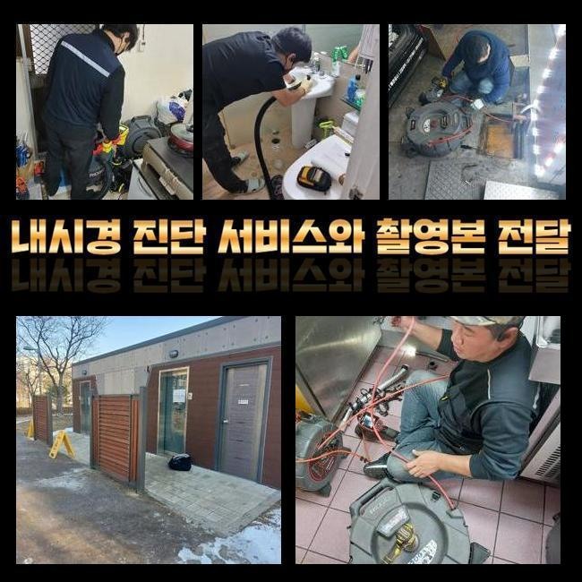
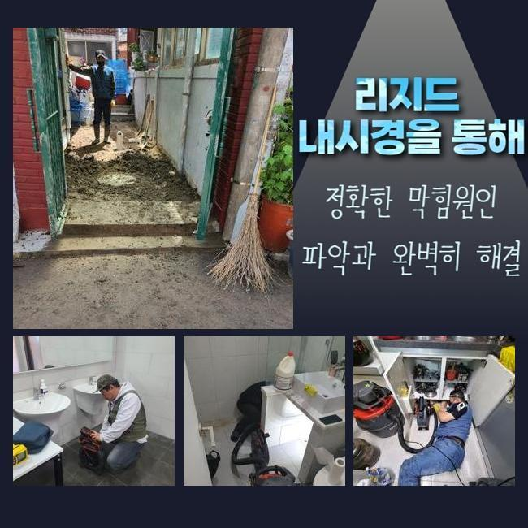
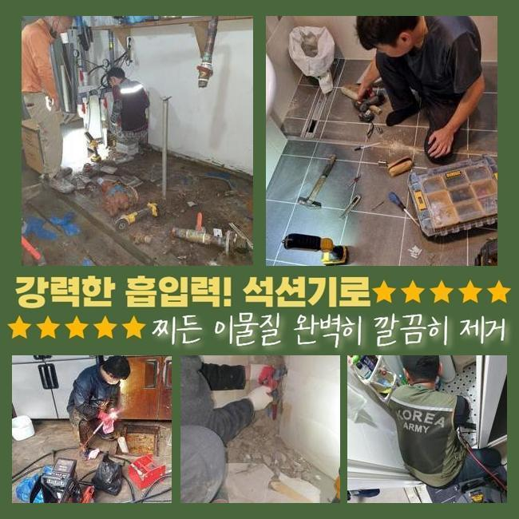
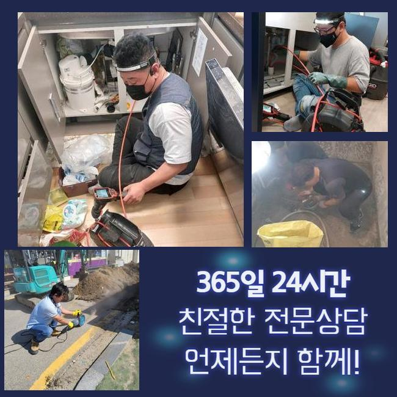
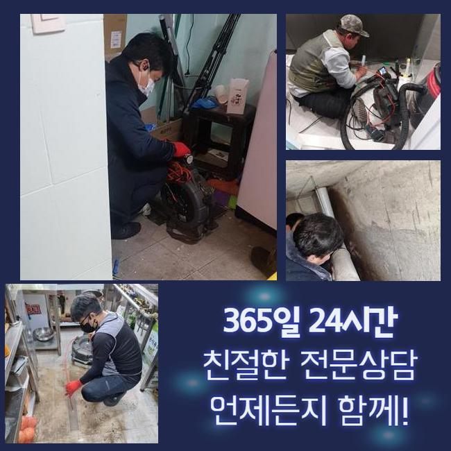

🏠 용인 풍덕천동싱크대배수관막힘 상현동 하수구뚫는비용 통수전문
용인 풍덕천동 싱크대막힘 전문 시공 후기

📋 작업 개요
- 위치: 용인 풍덕천동, 풍덕천동, 용인
- 서비스 유형: 싱크대막힘, 하수구막힘, 배관막힘, 역류해결, 뚫는업체, 배관청소, 고압세척
- 작업 일시: 2025. 1. 6. 17:24
- 업체명: 하수구수사대 (010-5615-2118)
🔍 문제 상황
용인 풍덕천동싱크대배수관막힘 상현동 하수구뚫는비용 통수전문
얼마전 사무공간의 개수대에서 야기된 통수오류를 해결해드린 장소를 소개할 예정이에요
이해하기 쉽고 효용성있는 정보들이 많으니 집중~!
오피스라는 장소에서 생겨난 일이다 보니 셀프조치로 뚫기위한 시도들이 눈에 띄었죠
전문인은 작업방식들을 어떠한 절차로 수행하는지 더불어 각 관로들을 지켜내는 꿀팁도 이해되실 수 있게끔 설명드려볼게요
고객께선 근무 중에 조리를 위한 것이 아니였기에 배관막힘이 생기게될 줄 몰랐다고 전해주셨어요
사무공간은 음식을 사용할 일이 없는 공간이라서 신경쓰고 관리들이 진행되지 못하는 사례가 대다수에요
저희의 전문가들은 곧장 출동했죠 도착하여 하수관을 관찰했습니다
우선 육안으로 관찰하니 물들이 솟구치는 문제들은 관찰되지않았지만 느리게 내려가는 광경이 눈에 들어왔어요
이러한 시기에는 예고없이 고이게되고 역류해버리는 증상들이 나타날 가능성이 높습니다

🔎 원인 분석
💡 전문가 진단: 정밀 진단 장비를 사용하여 슬러지의 고착 여부를 판명하고 타격/세척 작업을 실시했습니다.
그렇기때문에 석션기계로 일컫는 장비를 꺼내 잔존하는 하수들을 제거했는데요
석션장비는 점검과정보다 먼저 선명한 송출을 위해서 사용되고 작은 이물들을 청소해줄때 실질적인 성능을 보입니다
흡입기통에 하수들이 담겨있었지만 하수관으로 더디게 흐르는 상태였습니다
석션기 사용 이후 절차로는 내시경장치로 심층부까지 체크했죠
내시경 라인을 투입시키니 잔해물들이 자리하고 있어 배관구경이 좁아지게 되었어요
식재료 이용을 안하는 공간들인데 왜 잔해들이 축적되었나 의아할 수 있겠지만 사무실이라면 정기적인 세척들이 이뤄지지않는 경우들이 다수입니다
우선은 간식이나 커피의 잔여물질 혹은 오일류들이 뒤엉켜 슬러지들을 만들어냅니다
내시경기기로 배수관을 확인하며 샤프트장치로 기름성분을 분쇄시키며 천천히 각 관로들을 청소해주니 내부 구경이 확보되면서 통로들이 회복되었어요
기름의 경우엔 관찰할 때 빨간색을 띄므로 기름성분이 모조리 사라진다면 영상화면도 선명하게 변화되는걸 보게됩니다
샤프트작업을 이행했음에도 물이 하수관으로 수월하게 배출되지 못하는 상태였어요
일단은 수돗물을 따로 받은 다음 일시에 흘려보내니 특정한 위치에서 고이며 막혀버리는 결함이 잔존해있는 상태였습니다

🔧 작업 과정
오수들이 흐름이 원천중단되었단건 놓치게된 요소들이 남아있단 신호탄이죠
이물질외에 놓친 요소가 남아있단 걸 뜻하므로 출수부분까지 확인할 필요성이 대두되었어요
저희전문인들은 오랫동안 이어진 개수대 트러블의 까닭을 파헤치기위하여 내시경케이블을 깊숙한 지점으로 투입시켰습니다
끝내 인지한 건 배수라인의 모서리가 바닥부분에 매립되어진 형상이 아니라 바깥에 빠져나와 설치되어진 점이였죠
실내부터 내시경장비로 관찰하는게 쉽지않아 자리를 옮겨 역순으로 장비들을 이용할 수 있게끔 타공작업을 통해 뚫어주고 구멍을 통하여 내시경 내시경기기의 줄을 삽입했죠
내시경케이블을 넣으니 이물질로 문제들을 찾아냈어요
탕비실라인에서는 관로들이 연결되어 있지 못했고 바로 밑의 하수관과 함께 바깥으로 뻗어나가있는 구조였어요
그 라인을 따라가보니 세면대로 올라가는길에 큰 이물이 배수관을 좁히게했던 실정이었습니다
싱크대쪽의 하수관이 아니라 예상못한 지점에 큰 이물이 자리잡아 발견하기까지 애를 먹었지만 결국 계속적인 막힘사안의 주된 까닭들을 찾았습니다
재차 스팟을 검수하고 이물제거가 필요한 포인트의 배수관을 타공작업해주어 폐기물을 꺼내주었어요
빼보았더니 둥근 호환이 안되는 배수캡으로 파악했는데 어떻게 빠지게된건지 파악이 안됐지만 크기도 상당했고 한 라인에 자리잡았을 때라면 배수가 불가능에 가까운 이물질이였습니다
주방의 배수관과 문제들을 발생케하는 이물질들도 없애주는 과정들을 진행했더니 배수과정이 제 모습을 되찾았고 시정이 마무리되었는데요
끝으로 고객께선 악취문제도 물어보셨는데요 작업하면서 확인했지만 냄새까지 발생하는것을 확인했죠
트랩부분에 균열들이 남아있었습니다 배수관부터 마무리를 하고서 새로운 트랩부품으로 교체도 여지없이 해드렸습니다
마지막 체크를 위해서 탕비공간의 싱크대쪽에 물들을 채워서 통수시키니 이전과 달리 별다른 문제없이 흐르게되었어요
금일의 배수관 관련 증세도 말끔하게 해결됐죠


✅ 작업 완료
진단을 철저히 해 마침내 문제의 이유를 추적하여 결국 막힌 이유를 발견하게되었고 시설물 이용도 가능하게되었어요
위같이 의뢰인분이 추후에도 불편하시지않게 배수정체 시정을 완료했답니다
사용하실때 싱크볼로 오일들과 잔해들이 안빠지게 관리하는것이 좋고 청소과정도 때에 맞춰 진행해주시면 좋습니다
저희전문인들은 재발되지 않는 작업수순에 집중합니다 이에 작업하면서 작업들을 끝내고 수리한 부분에서 재발되면 금액청구없이 as까지 제공해드려요
배수정체로 인해 전문진의 출장을 고려하는 중이시라면 저희의 전문가들에게 문의하시는건 어떠실지요?



⚠️ 주방 싱크대 배관 막힘 예방 수칙
- ✅ 기름기가 묻은 식기나 프라이팬은 설거지 전 키친타올로 반드시 기름때를 닦아내세요.
- ✅ 주기적으로 싱크대 개수대에 뜨거운 물을 가득 받아 한 번에 내려 배관 내부 기름을 씻어내세요.
- ✅ 배수구 거름망을 미세한 필터로 사용하시고 음식물 찌꺼기가 틈으로 새어 들지 않게 관리하세요.
- ✅ 베이킹소다와 식초를 뜨거운 물과 함께 일주일에 한 번씩 부어주면 배관 살균과 막힘 예방에 좋습니다.
💡 핵심 정리
- 확실한 장비 작업(내시경 점검 및 샤프트 스케일링)으로 원인을 뿌리 뽑습니다.
- 작업 후 1년 이내에 동일한 부위 재발 시 100% 무상 A/S 서비스를 보장합니다.
- 서울 · 경기 · 인천 전 지역에 24시간 언제든 긴급 출동할 수 있도록 항시 대기 중입니다.
❓ 자주 묻는 질문 (FAQ)
🚨 용인 풍덕천동 싱크대막힘 문제로 고민이신가요?
정확한 원인 진단과 확실한 시공으로 재발 없는 해결을 약속드립니다.
24시간 긴급 출동 | 서울 · 경기 · 인천 전지역 | 1년 내 재발 시 무상 A/S